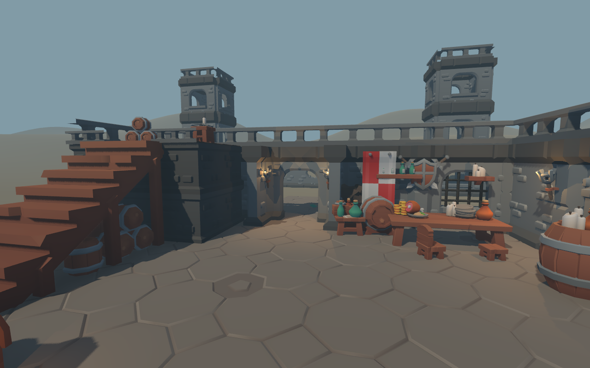
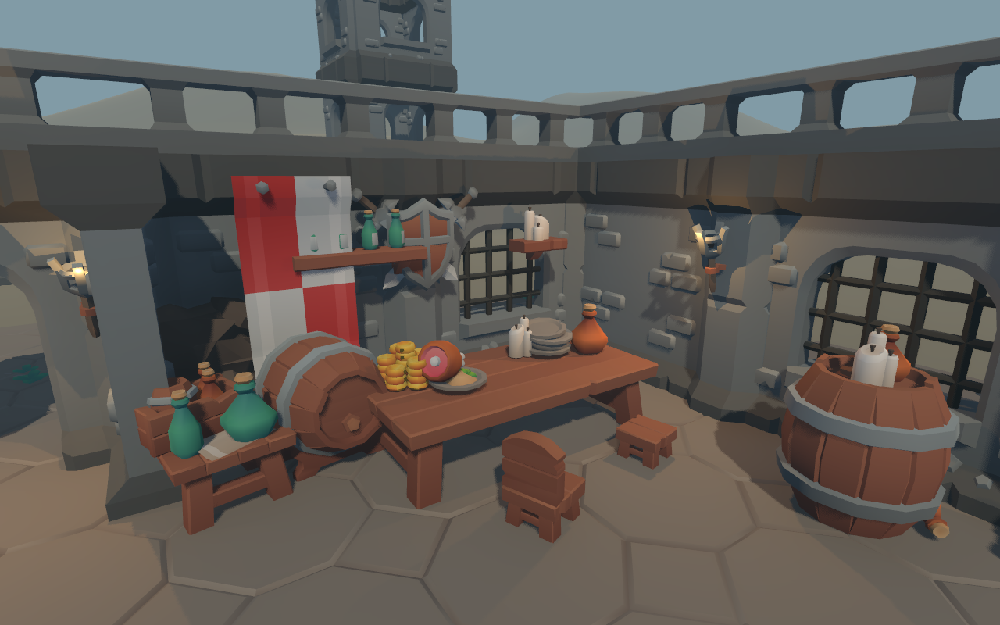
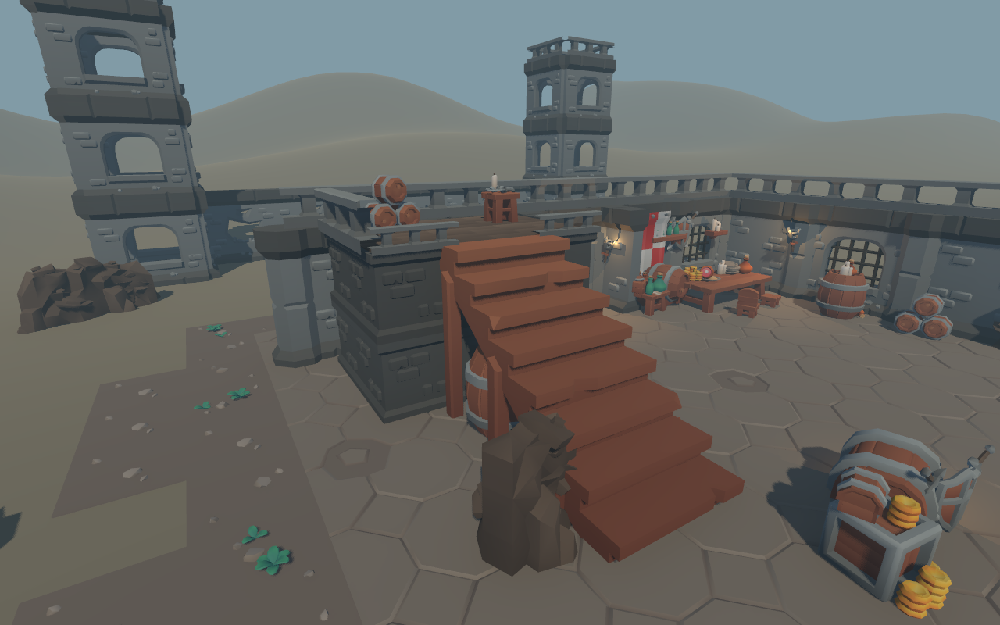
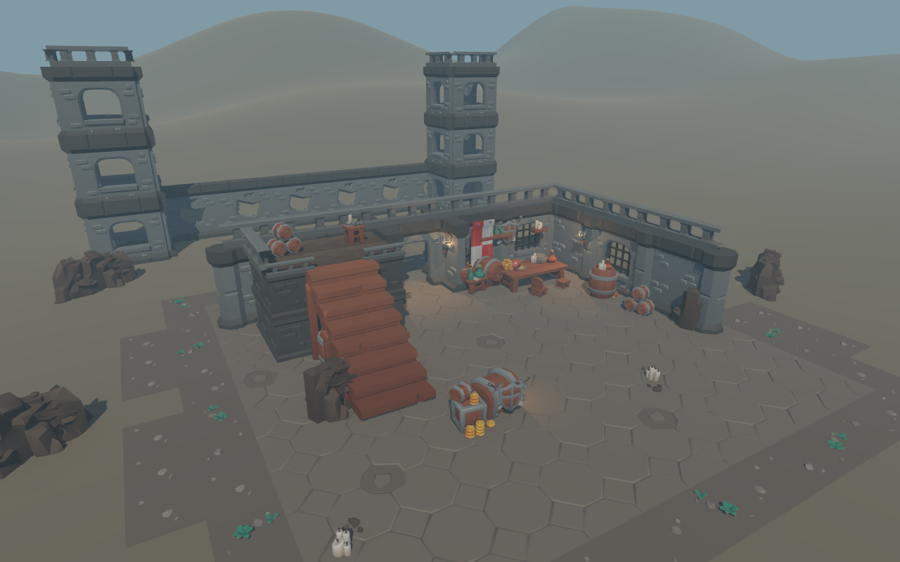

GODOT ENVART / INDEPENDENT SKILL TRIAL
Emberwatch：独立空工程复刻
将 godot-envart skill 与 b81f512 的六张原始参考图交给一个独立 subagent。它从空 Godot 工程起步，选择灰烬堡垒方向，搭建带入口、高台、补给区和远景废墟的小庭院。
这次验证的是流程能否产出可编辑、可审看的同类环境。没有复制旧场景、装配脚本、控制器或测试系统。主 agent 通过实机图反馈曝光、接地和渲染层次问题；这是一轮带视觉反馈的试跑，不是完全无人干预的基准测试，也尚未经过用户美术验收。

交付内容
独立工程：experiments/envart-skill-trial/project.godot。用 Godot 4.7.2 导入并按 F5 运行；1 / 2 / 3 / 4 切换总览、入口、道具近景、高差机位。courtyard.tscn 是可直接编辑的成品场景，build_scene.gd 用于重建，重建不是打开场景的前置条件。
该工程仅包含静态观察机位，没有玩家、碰撞玩法或回归测试。只检查能打开、素材正确显示和实际截图；验收依据是下面的画面。


真实迭代中发现了什么
- 首轮曝光过强，石材和地面细节丢失；远景没有接地，入口还误用了封闭凹槽模型。看图后先修这些问题，没有继续堆 props。
- 后续调整了照明和材质，换用真正开口的门洞，补上连续地形，修正地形朝向、碎石尺度和孤立的地面拼块。
- 第一版为出图便利选择了 Compatibility，画面接触层次弱于基线。最终改用基线采用的 Forward+，保持机位和内容不变，重新审看阴影与材质。

Skill 的小幅修订
保留六步主流程，只补了实际暴露的三个判断：入口必须区分真开口与装饰凹槽；优先修过曝和悬空背景；渲染能力应服从美术参考，不能为省事默认降级。没有加入新的功能验证阶段。
结果边界
产出了完整地面、真实套件建筑、活动道具组、前后景和四张可复查的实机图。局部风格比较统一，但远景简单、塔楼重复、前景较空、楼梯较陡和地面边缘偏硬仍然存在，不能直接称为“达到或超过基线”。
本次使用 37 个 KayKit Dungeon Remastered 1.0 模型，与灰烬参考属于同一家族。它验证了独立装配与看图修正，没有验证不同素材家族之间的风格迁移。素材采用作者公开 CC0 资源，来源与哈希见 素材清单，完整决策记录见 run_notes.txt。